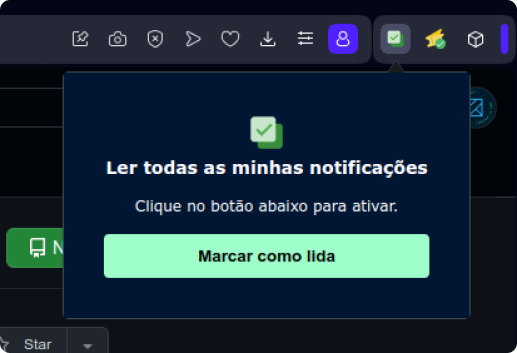
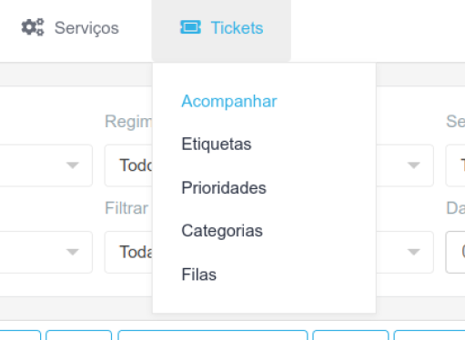

Extensões para simplificar o dia a dia no BackOffice.

Como utilizar?
(baixar aqui)

Como utilizar?
(baixar aqui)
Para Chrome e relacionados, é preciso ativar a opção Modo desenvolvedor para poder carregar as extensões. No Opera não é necessário.